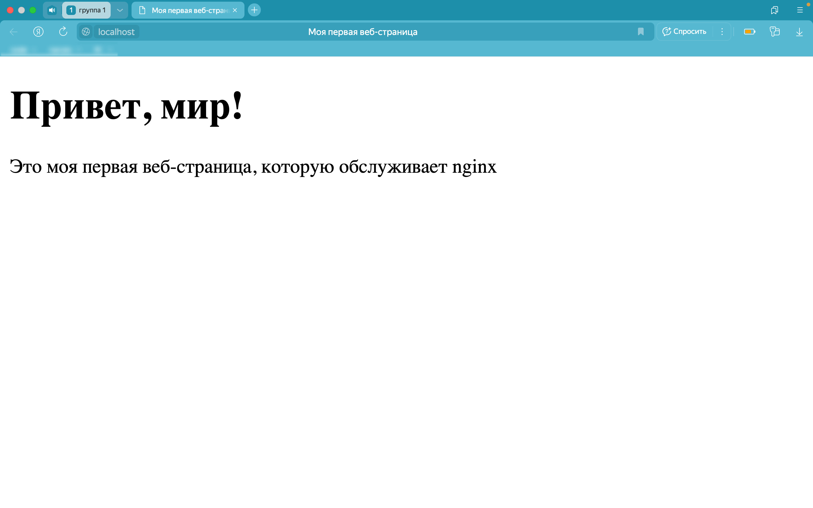

Инструкция описывает безопасную установку и настройку веб-сервера nginx и запуска на нем веб-страницы с помощью менеджера пакетов Homebrew на системе macOS 13.3 (Ventura) для локального тестирования. Инструкция предназначена для начинающих пользователей, которые изучают веб-технологии и хотят ознакомиться с nginx.
nginx (engine x) — высокопроизводительный веб-сервер с открытым исходным кодом, который часто используется для обслуживания статических веб-страниц.
sudo несёт риски: при ошибках можно нарушить работу сервисов или потерять доступ к файлам.sudo) на компьютере.Перед началом работы рекомендуется ознакомиться с документацией:
nginx — легковесный веб-сервер, и его минимальные требования крайне невысоки. Ниже представлен минимальный набор для локальной разработки.
| Компонент | Требования |
|---|---|
| macOS | 10.15 (Catalina) или новее |
| Процессор | Intel (x86_64) или Apple Silicon (ARM64) |
| Homebrew | 3.0.0 или новее |
| Свободное место на диске | ~50 МБ |
| Оперативная память | от 512 МБ (для комфортной работы с редактором и браузером — от 2 ГБ) |
Ниже представлены базовые команды nginx.
| Команда | Описание |
|---|---|
sudo nginx | Запустить nginx (если не работает через brew services) |
sudo nginx -s stop | Остановить сервер |
sudo nginx -s reload | Перезагрузить конфигурации без остановки сервера |
sudo nginx -s reopen | Переоткрыть лог-файлов |
brew services start nginx | Запустить через Homebrew (фоновый режим) |
brew services restart nginx | Перезапустить через Homebrew |
| Команда | Описание |
|---|---|
sudo nginx -t | Проверить синтаксис конфига (обязательно перед reload!) |
sudo nginx -T | Проверить синтаксис + вывести весь конфиг в терминал |
| Команда | Описание |
|---|---|
tail -f /opt/homebrew/var/log/nginx/access.log | Просмотреть логи доступа в реальном времени |
tail -f /opt/homebrew/var/log/nginx/error.log | Просмотреть ошибки в реальном времени |
sudo lsof -i :80 | Проверить, какой процесс использует порт 80 |
| Команда | Описание |
|---|---|
sudo code /opt/homebrew/etc/nginx/nginx.conf | Открыть конфиг в VS Code |
sudo cp nginx.conf nginx.conf.backup | Создать резервную копию конфига |
sudo diff nginx.conf nginx.conf.backup | Сравнить текущий конфиг с резервной копией |
Homebrew — утилита командной строки для установки пакетов и приложений в macOS.
Если Homebrew ещё не установлен:
/bin/bash -c "\$(curl -fsSL https://raw.githubusercontent.com/Homebrew/install/HEAD/install.sh)"root для установки в системные директории. Вводите пароль только при уверенности в источнике скрипта.
Installation successful!brew --versionЧтобы установить nginx с помощью Homebrew:
brew install nginxbrew services start nginxstarted):
brew services listhttp://localhost:8080/.8080 используется по умолчанию для избежания конфликтов с другими сервисами и чтобы не требовать постоянных прав суперпользователя.
Создайте корневую папку для файлов сайта, например, на рабочем столе:
mkdir -p ~/Desktop/mywebsiteЗапомните этот путь — он понадобится для настройки root в конфигурации nginx.
Точный путь к конфигурационному файлу можно узнать командой:
brew info nginxВ выводе ищите строку вида: Configuration files are at: /opt/homebrew/etc/nginx.
Обычно файл находится по пути: /opt/homebrew/etc/nginx/nginx.conf.
brew info nginx.
Перед любыми правками обязательно создайте резервную копию:
sudo cp /opt/homebrew/etc/nginx/nginx.conf /opt/homebrew/etc/nginx/nginx.conf.backupЭто позволит быстро восстановить рабочую конфигурацию при ошибках.
Откройте конфигурационный файл в текстовом редакторе (пример для VS Code):
sudo code /opt/homebrew/etc/nginx/nginx.confsudo будьте внимательны: ошибки могут остановить сервер.
Внутри файла найдите блок server { ... }. В нём нужно изменить два параметра:
listen: по умолчанию стоит 8080; если вы хотите оставить этот порт, ничего не меняйте. Если хотите использовать порт 80, измените на listen 80;.80 требует прав суперпользователя и может конфликтовать с другими сервисами. Для обучения лучше оставить 8080.
root: по умолчанию часто стоит путь к тестовой директории Homebrew. Замените его на вашу рабочую директорию:
root /Users/ВАШ_ПОЛЬЗОВАТЕЛЬ/Desktop/mywebsite;ВАШ_ПОЛЬЗОВАТЕЛЬ — ваше имя пользователя macOS (узнать можно командой whoami).
Пример изменённого блока server (с портом 8080):
server {
listen 8080;
server_name localhost;
root /Users/ВАШ_ПОЛЬЗОВАТЕЛЬ/Desktop/mywebsite;
index index.html;
location / {
try_files $uri $uri/ =404;
}
}Сохраните файл и закройте редактор.
Перед перезагрузкой обязательно проверьте синтаксис:
sudo nginx -tЕсли вывод содержит syntax is ok и test is successful, конфигурация корректна. Если есть ошибки — исправьте их и повторите проверку.
Перезагрузите конфигурацию без остановки сервера:
sudo nginx -s reloadЧтобы nginx отображал страницу, в корневой директории должен быть файл index.html.
touch ~/Desktop/mywebsite/index.html<!DOCTYPE html>
<html>
<head>
<meta charset="UTF-8">
<title>Моя первая веб-страница</title>
</head>
<body>
<h1>Привет, мир!</h1>
<p>Это моя первая веб-страница, которую обслуживает nginx!</p>
</body>
</html>ls -l ~/Desktop/mywebsite/Откройте браузер и перейдите по адресу:
8080: http://localhost:8080/;80: http://localhost/.Вы должны увидеть страницу с заголовком Привет, мир!, как на рисунке ниже.

Симптомы:
brew services start nginx завершается ошибкой;http://localhost страница не загружается.Решение:
brew services liststarted, выполнить:
brew services restart nginxСимптомы:
sudo nginx -t появляются сообщения о синтаксических ошибках;reload.Решение:
sudo nginx -tline 25), открыть конфиг:
sudo code /opt/homebrew/etc/nginx/nginx.conf{ } и ; на месте./Users/username/Desktop/mywebsite).sudo cp /opt/homebrew/etc/nginx/nginx.conf.backup /opt/homebrew/etc/nginx/nginx.confСимптомы: в браузере отображаются символы вместо текста.
Решение:
index.html в VS Code.<meta charset="UTF-8"> в <head>.